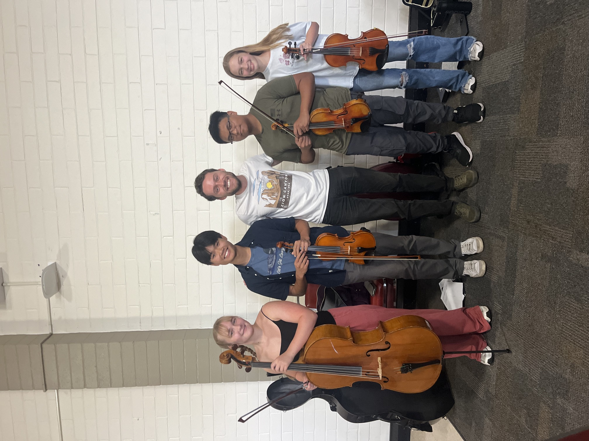
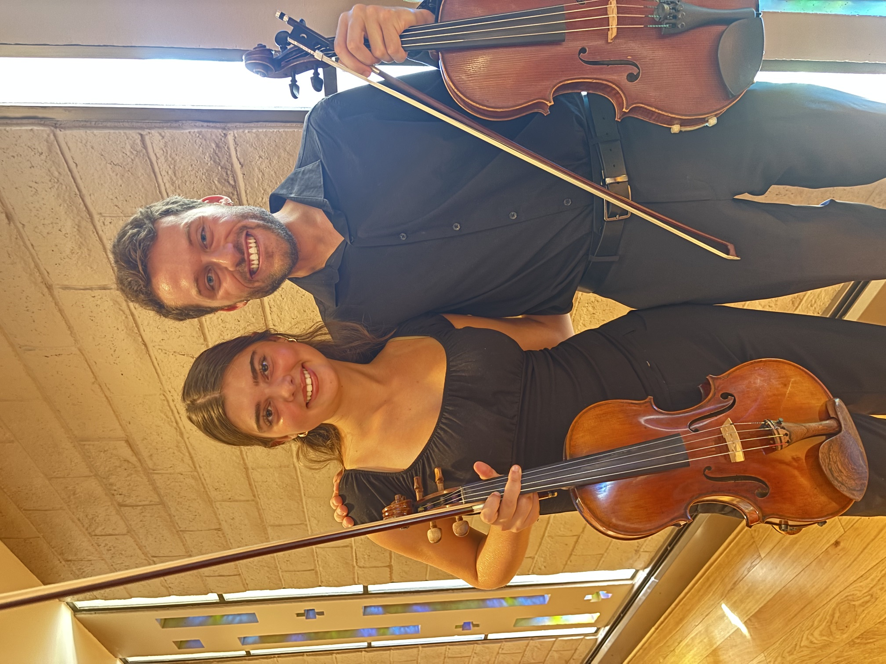

Santa Barbara Viola Lessons
Private viola instruction in downtown Santa Barbara for students of all ages.
Now accepting new students for Fall 2026!
Schedule an Introductory Lesson
Who I Teach
I welcome children, teens, and adults, including students beginning the viola for the first time and experienced players returning to the instrument or seeking more focused guidance.
Beginning Violists
A supportive introduction to setup, tone, rhythm, note-reading, and productive practice habits.
Youth Orchestra Students
Preparation for auditions, seating, orchestra repertoire, sight-reading, and confident ensemble playing.
Advancing Students
Detailed work on solo repertoire, technique, excerpts, performance preparation, and college or festival auditions.
Violinists Transitioning to Viola
Specialized help with alto clef, instrument setup, tone production, bow weight, and the distinct musical role of the viola.
Teaching Philosophy
I believe every student deserves an approach that reflects their personality, goals, and way of learning. In my teaching, strong technique supports musical freedom, confidence, and an individual voice. I aim to create lessons that are thoughtful, encouraging, and joyful, where students feel comfortable experimenting, asking questions, and growing into independent, expressive musicians.
Experience
I have more than 10 years of teaching experience and have worked with students in private lessons, sectionals, chamber music, youth orchestra, and festival settings. My professional performance work also informs my teaching, helping students connect technical development with expressive, confident music-making.
- Viola faculty at Westmont College
- Teaching artist with the Santa Barbara Youth Symphony
- Coaching experience with Santa Barbara Strings
- Faculty at the Lyceum Oaks Summerfest
- More than a decade of private teaching experience
- Professional orchestral, chamber, and freelance performance experience

Student Testimonial
“Cam has been my viola teacher for nearly four years, and I am so grateful for both his specialized viola expertise and his supportive, cheerful demeanor. It is rare to find someone who can be an incredible mentor and a kind friend at the same time. When I became principal viola for the Santa Barbara Youth Symphony, the pressure was on. Cam helped me break down the intricacies of challenging repertoire and made it all seem completely doable. He constantly pushes me to grow, involving me in regional scholarships and inviting me to perform alongside him in professional settings, like the Santa Barbara Chamber Music. I highly recommend Cam to anyone at any music level.”
Lesson Details
Weekly lessons are available in 30-, 45-, and 60-minute formats. The most appropriate length depends on the student’s age, experience, and goals.